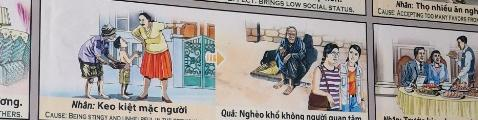

El Cofre del EgoísmoSự ích kỷ The Chest of Greed Lo scrigno dell'egoismo 自私的胸怀 صدر الأنانية Сундук эгоизма Die Truhe des Egoismus Le coffre de l'égoïsme 利己主義の胸 O baú do egoísmo Chiếc rương của sự ích kỷ
El corazón que no da, no tiene donde recibir. The heart that does not give has no place to receive. Il cuore che non dà non ha dove ricevere. 不付出的心无处可受。 القلب الذي لا يعطي ليس له مكان يأخذه. Сердцу, которое не отдает, неоткуда брать. Das Herz, das nicht gibt, kann nirgendwo empfangen. Le cœur qui ne donne pas n’a nulle part où recevoir. 与えない心には受け取るところがありません。 O coração que não dá não tem onde receber. Trái tim không cho đi sẽ không có nơi nào để nhận lại.
Negar la ayuda cuando se tiene la capacidad de darla es cerrar los canales por los que fluye la abundancia. El egoísta vive en la ilusión de posesión, sin entender que todo es energía en movimiento.
Denying help when one has the capacity to give it is closing the channels through which abundance flows. The greedy live in the illusion of possession, not understanding that everything is energy in motion.
Negare aiuto quando hai la capacità di darlo significa chiudere i canali attraverso i quali scorre l’abbondanza. La persona egoista vive nell'illusione del possesso, senza comprendere che tutto è energia in movimento.
当你有能力提供帮助时却拒绝帮助，就等于关闭了富足流动的渠道。自私的人生活在占有的幻觉中，而不了解一切都是运动中的能量。
إن رفض المساعدة عندما تكون لديك القدرة على تقديمها يعني إغلاق القنوات التي تتدفق من خلالها الوفرة. يعيش الإنسان الأناني في وهم التملك، دون أن يفهم أن كل شيء عبارة عن طاقة متحركة.
Отказывать в помощи, когда у вас есть возможность ее оказать, — значит перекрывать каналы, по которым течет изобилие. Эгоистичный человек живет иллюзией обладания, не понимая, что все — это энергия в движении.
Hilfe zu verweigern, wenn man die Möglichkeit hat, sie zu geben, bedeutet, die Kanäle zu schließen, durch die Fülle fließt. Der egoistische Mensch lebt in der Illusion der Besessenheit, ohne zu verstehen, dass alles Energie in Bewegung ist.
Refuser de l’aide alors que vous avez la capacité de la donner, c’est fermer les canaux par lesquels circule l’abondance. La personne égoïste vit dans l’illusion de la possession, sans comprendre que tout est énergie en mouvement.
援助を与える能力があるのに援助を拒否することは、豊かさが流れる経路を閉ざすことになります。利己的な人は、すべてのものは動いているエネルギーであるということを理解せず、所有しているという幻想の中で生きています。
Negar ajuda quando você tem a capacidade de dá-la é fechar os canais pelos quais flui a abundância. O egoísta vive na ilusão da posse, sem entender que tudo é energia em movimento.
Từ chối sự giúp đỡ khi bạn có khả năng cho đi là đóng các kênh mà sự dồi dào chảy qua. Người ích kỷ sống trong ảo tưởng chiếm hữu mà không hiểu rằng mọi thứ đều là năng lượng chuyển động.
El resultado es un renacimiento en la pobreza extrema y el abandono. Nadie acude en ayuda de quien nunca ayudó. La imagen del anciano solo nos recuerda que el verdadero tesoro es el que se comparte.
The result is rebirth in extreme poverty and abandonment. No one comes to the aid of someone who never helped. The image of the lonely old man reminds us that the true treasure is what is shared.
Il risultato è una rinascita nella povertà estrema e nell’abbandono. Nessuno viene in aiuto di qualcuno che non ha mai aiutato. L'immagine del vecchio ci ricorda solo che il vero tesoro è quello condiviso.
结果是在极端贫困和被遗弃中重生。没有人会去帮助从未帮助过的人。老人的形象只是提醒我们，真正的财富是共享的。
والنتيجة هي ولادة جديدة في الفقر المدقع والهجر. لا أحد يأتي لمساعدة شخص لم يساعد قط. إن صورة الرجل العجوز تذكرنا فقط بأن الكنز الحقيقي هو الذي نتقاسمه.
Результатом является возрождение крайней нищеты и заброшенности. Никто не приходит на помощь тому, кто никогда не помогал. Образ старика лишь напоминает нам о том, что настоящее сокровище – то, которым делятся.
Das Ergebnis ist eine Wiedergeburt in extremer Armut und Verlassenheit. Niemand kommt jemandem zu Hilfe, der noch nie geholfen hat. Das Bild des alten Mannes erinnert uns nur daran, dass der wahre Schatz der ist, der geteilt wird.
Le résultat est une renaissance dans l’extrême pauvreté et l’abandon. Personne ne vient en aide à quelqu’un qui n’a jamais aidé. L’image du vieil homme nous rappelle seulement que le véritable trésor est celui qui se partage.
その結果、極度の貧困と放棄の中で再生することになります。助けたことのない人には誰も助けに来ません。老人のイメージは、本当の宝は共有されるものであることを思い出させるだけです。
O resultado é um renascimento na pobreza extrema e no abandono. Ninguém vem em auxílio de alguém que nunca ajudou. A imagem do velho apenas nos lembra que o verdadeiro tesouro é aquele que se partilha.
Kết quả là sự tái sinh trong cảnh nghèo đói và bị bỏ rơi cùng cực. Không ai đến giúp đỡ một người chưa bao giờ giúp đỡ. Hình ảnh ông già chỉ nhắc nhở chúng ta rằng kho báu thực sự là thứ được chia sẻ.
El Frío de las Monedas
The Cold of Coins
Il freddo delle monete
硬币的寒冷
برودة العملات
Холод монет
Die Kälte der Münzen
Le froid des pièces
コインの冷たさ
O frio das moedas
Cái lạnh của đồng xu
Un rico mercader se sentaba sobre montañas de monedas de oro, mientras cerraba la puerta a niños descalzos que tiritaban en la nieve. «Lo mío es mío», repetía, creyendo que su tesoro lo protegería de la muerte y del dolor...
Pero el egoísmo congela el alma. Al encadenar su riqueza, se separó de la gran familia humana. Tiempo después, la rueda de la vida giró, y él se encontró a sí mismo siendo un vagabundo perdido en una calle sin nombre. Nadie lo miraba. Nadie le daba calor.
Aquel mendigo que sufría el terrible frío del abandono, era él experimentando el mismo hielo que creó. Solo rompiéndose en llanto al descubrir el dolor del hambre, logrará descongelar su corazón... para comprender que el mayor tesoro no es retener, sino compartir el pan bajo el mismo techo del amor.
A rich merchant sat on mountains of gold coins, while he closed the door on barefoot children shivering in the snow. "What is mine is mine," he repeated, believing that his treasure would protect him from death and pain...
But selfishness freezes the soul. By chaining his wealth, he separated himself from the great human family. Some time later, the wheel of life turned, and he found himself a wanderer lost on a nameless street. Nobody was looking at him. Nobody gave him warmth.
That beggar who suffered the terrible cold of abandonment was him experiencing the same ice that he created. Only by breaking down in tears when discovering the pain of hunger will you be able to thaw your heart... to understand that the greatest treasure is not to retain, but to share bread under the same roof of love.
Un ricco mercante sedeva su montagne di monete d'oro, mentre chiudeva la porta ai bambini scalzi che tremavano nella neve. "Ciò che è mio è mio", ripeteva, credendo che il suo tesoro lo avrebbe protetto dalla morte e dal dolore...
Ma l'egoismo congela l'anima. Incatenando le sue ricchezze si separò dalla grande famiglia umana. Qualche tempo dopo, la ruota della vita girò e lui si ritrovò come un vagabondo perso in una strada senza nome. Nessuno lo stava guardando. Nessuno gli ha dato calore.
Quel mendicante che soffrì il terribile freddo dell'abbandono fu lui a sperimentare lo stesso ghiaccio da lui creato. Solo scoppiando in lacrime quando scoprirai il dolore della fame potrai scongelare il tuo cuore... per comprendere che il tesoro più grande non è trattenere, ma condividere il pane sotto lo stesso tetto dell'amore.
一位富商坐在堆积如山的金币上，关上门，关上门，关上门，关上门，关上门，关上门，关上门，关上门，关上门，关上门，让赤脚的孩子们在雪地里瑟瑟发抖。 “属于我的就是我的，”他重复道，相信他的宝藏会保护他免受死亡和痛苦……
但自私却冻结了灵魂。通过束缚他的财富，他使自己与人类大家庭分离。一段时间后，生命的车轮转动，他发现自己成了一个迷失在无名街道上的流浪者。没有人看着他。没有人给他温暖。
那个遭受被遗弃的严寒的乞丐正经历着他所创造的同样的冰。只有在发现饥饿的痛苦时流下泪水，你的心才能融化……才能明白，最大的财富不是挽留，而是在爱的同一屋檐下分享面包。
جلس تاجر غني على جبال من العملات الذهبية، بينما أغلق الباب في وجه أطفال حفاة يرتجفون في الثلج. وكرر "ما لي فهو لي"، معتقدًا أن كنزه سيحميه من الموت والألم...
لكن الأنانية تجمد الروح. وبتقييد ثروته، فصل نفسه عن الأسرة البشرية العظيمة. وبعد مرور بعض الوقت، دارت عجلة الحياة، ووجد نفسه ضائعًا في شارع مجهول. لم يكن أحد ينظر إليه. لم يمنحه أحد الدفء.
ذلك المتسول الذي عانى من برد الهجر الرهيب كان يعاني من نفس الجليد الذي خلقه. فقط من خلال الانهيار بالبكاء عند اكتشاف آلام الجوع، ستتمكن من إذابة قلبك... وفهم أن الكنز الأعظم ليس الاحتفاظ بالخبز، بل مشاركة الخبز تحت سقف الحب نفسه.
Богатый купец сидел на горах золотых монет и закрывал дверь перед босыми детьми, дрожащими от снега. «Что мое, то мое», — повторял он, веря, что его сокровище защитит его от смерти и боли…
Но эгоизм леденеет душу. Сковав свое богатство, он отделил себя от великой человеческой семьи. Спустя некоторое время колесо жизни повернулось, и он оказался странником, потерявшимся на безымянной улице. Никто на него не смотрел. Никто не дал ему тепла.
Тот нищий, который страдал от ужасного холода покинутости, переживал тот же лед, который он создал. Только расплакавшись, познав боль голода, ты сможешь оттаять свое сердце... понять, что величайшее сокровище - не сохранить, а разделить хлеб под одной крышей любви.
Ein reicher Kaufmann saß auf Bergen von Goldmünzen, während er die Tür vor barfüßigen Kindern schloss, die im Schnee zitterten. „Was mir gehört, gehört mir“, wiederholte er und glaubte, dass sein Schatz ihn vor Tod und Schmerz schützen würde ...
Aber Egoismus lässt die Seele erstarren. Indem er seinen Reichtum fesselte, trennte er sich von der großen Menschheitsfamilie. Einige Zeit später drehte sich das Rad des Lebens und er fand sich als Wanderer auf einer namenlosen Straße wieder. Niemand sah ihn an. Niemand schenkte ihm Wärme.
Dieser Bettler, der unter der schrecklichen Kälte des Verlassenseins litt, erlebte dasselbe Eis, das er geschaffen hatte. Nur wenn Sie in Tränen ausbrechen, wenn Sie den Schmerz des Hungers entdecken, können Sie Ihr Herz auftauen... um zu verstehen, dass der größte Schatz nicht darin besteht, das Brot zu behalten, sondern darin, es unter dem gleichen Dach der Liebe zu teilen.
Un riche marchand était assis sur des montagnes de pièces d'or, tandis qu'il fermait la porte aux enfants pieds nus qui grelottaient dans la neige. "Ce qui est à moi est à moi", répétait-il, croyant que son trésor le protégerait de la mort et de la douleur...
Mais l’égoïsme gèle l’âme. En enchaînant ses richesses, il s'est séparé de la grande famille humaine. Quelque temps plus tard, la roue de la vie tourna et il se retrouva errant perdu dans une rue sans nom. Personne ne le regardait. Personne ne lui a donné de chaleur.
Ce mendiant qui a souffert du terrible froid de l'abandon était lui-même en train de vivre la même glace qu'il avait créée. Ce n'est qu'en fondant en larmes en découvrant la douleur de la faim que vous pourrez dégeler votre cœur... pour comprendre que le plus grand trésor n'est pas de conserver, mais de partager le pain sous le même toit d'amour.
裕福な商人は金貨の山の上に座り、雪の中で震える裸足の子供たちの前でドアを閉めました。 「私のものは私のものだ」と彼は繰り返し、自分の宝物が死と痛みから守ってくれると信じていた…
しかし、利己主義は魂を凍らせます。彼は自分の富を鎖で繋ぐことによって、偉大な人類家族から自らを切り離しました。しばらくして、人生の歯車が回転し、彼は自分が名もない通りで迷った放浪者であることに気づきました。誰も彼を見ていませんでした。誰も彼に暖かさを与えなかった。
見捨てられたというひどい寒さに苦しんだあの乞食は、自分が作り出したのと同じ氷を経験していたのだ。空腹の痛みを知ったときに泣き崩れることによってのみ、あなたの心を解くことができます...最大の宝は保持することではなく、同じ愛の屋根の下でパンを分かち合うことであることを理解することができます。
Um rico comerciante sentou-se sobre montanhas de moedas de ouro, enquanto fechava a porta para crianças descalças que tremiam na neve. “O que é meu é meu”, repetiu ele, acreditando que seu tesouro o protegeria da morte e da dor...
Một thương gia giàu có ngồi trên núi tiền vàng, trong khi ông ta đóng cửa lại với những đứa trẻ chân trần đang run rẩy trong tuyết. “Cái gì của tôi là của tôi,” anh lặp lại, tin rằng kho báu của anh sẽ bảo vệ anh khỏi cái chết và nỗi đau…
Mas o egoísmo congela a alma. Ao acorrentar a sua riqueza, ele separou-se da grande família humana. Algum tempo depois, a roda da vida girou e ele se viu perdido em uma rua sem nome. Ninguém estava olhando para ele. Ninguém lhe deu calor.
Nhưng sự ích kỷ làm đóng băng tâm hồn. Bằng cách trói buộc sự giàu có của mình, anh ta đã tách mình ra khỏi đại gia đình nhân loại. Một thời gian sau, bánh xe cuộc đời xoay chuyển, anh thấy mình là kẻ lang thang lạc trên con phố không tên. Không ai nhìn anh ta cả. Không ai cho anh hơi ấm.
Aquele mendigo que sofreu o terrível frio do abandono era ele experimentando o mesmo gelo que criou. Somente desabando em lágrimas ao descobrir a dor da fome você conseguirá descongelar o seu coração... compreender que o maior tesouro não é reter, mas compartilhar o pão sob o mesmo teto do amor.
Người ăn xin chịu đựng cái lạnh khủng khiếp bị bỏ rơi đó chính là anh ta đang trải qua chính lớp băng mà anh ta đã tạo ra. Chỉ có rơi nước mắt khi khám phá ra nỗi đau của cơn đói, bạn mới có thể làm tan chảy trái tim mình... để hiểu rằng kho báu lớn nhất không phải là giữ lại mà là chia sẻ tấm bánh dưới cùng một mái nhà yêu thương.
La Inspiración Original
The Original Inspiration
L'Ispirazione Originale
最初的灵感
الإلهام الأصلي
Оригинальное вдохновение
Die Ursprüngliche Inspiration
L'Inspiration Originale
元のインスピレーション
A Inspiração Original
Nguồn cảm hứng ban đầu
La historia que hemos relatado en este capítulo está inspirada por el pasaje de la escena original de los murales «Tranh Nhân Quả» (Ilustraciones del Karma) del Templo Linh Ung en Da Nang, capturado en la imagen.
La storia che abbiamo raccontato in questo capitolo è ispirata al passaggio della scena originale dei murali “Tranh Nhân Quả” (Illustrazioni del Karma) del Tempio Linh Ung a Da Nang, catturati nell'immagine.
我们在本章中讲述的故事的灵感来自图像中捕获的岘港灵应寺“Tranh Nhân Quả”（业力插图）壁画的原始场景。
القصة التي رويناها في هذا الفصل مستوحاة من مقطع من المشهد الأصلي لجداريات "ترانه نهان كو" (الرسوم التوضيحية للكارما) لمعبد لينه أونغ في دا نانغ، الملتقطة في الصورة.
История, которую мы рассказали в этой главе, вдохновлена отрывком из оригинальной сцены фрески «Тран Нхан Ку» («Иллюстрации кармы») храма Линь Унг в Дананге, запечатленной на изображении.
Die Geschichte, die wir in diesem Kapitel erzählt haben, ist inspiriert von der Passage aus der Originalszene der Wandgemälde „Tranh Nhân Quả“ (Illustrationen von Karma) des Linh Ung-Tempels in Da Nang, die im Bild festgehalten ist.
L'histoire que nous avons racontée dans ce chapitre est inspirée du passage de la scène originale des peintures murales « Tranh Nhân Quả » (Illustrations du Karma) du temple Linh Ung à Da Nang, capturées dans l'image.
この章で私たちが語った物語は、ダナンのリンウン寺院の壁画「Tranh Nhân Quả」（カルマの図）の元のシーンの一節からインスピレーションを得て、画像に収められています。
A história que contamos neste capítulo é inspirada na passagem da cena original dos murais “Tranh Nhân Quả” (Ilustrações do Karma) do Templo Linh Ung em Da Nang, capturada na imagem.
Câu chuyện chúng tôi kể trong chương này được lấy cảm hứng từ đoạn trích từ cảnh gốc của bức tranh tường “Tranh Nhân Quả” ở chùa Linh Ứng ở Đà Nẵng, được ghi lại trong hình ảnh.
The story we have related in this chapter is inspired by the passage from the original scene of the "Tranh Nhân Quả" (Karma Illustrations) murals at the Linh Ung Temple in Da Nang, captured in the image.

Como se puede apreciar en el pasaje extraído del mural, la causa y su efecto kármico están descritos originalmente en vietnamita y con una breve traducción al inglés. A continuación, te ofrecemos su traducción detallada en los distintos idiomas:
As can be seen in the passage extracted from the mural, the cause and its karmic effect are originally described in Vietnamese with a brief English translation. Below, we offer the detailed translation in different languages:
Come si può vedere nel passaggio estratto dal murale, la causa e il suo effetto karmico sono originariamente descritti in vietnamita con una breve traduzione in inglese. Di seguito offriamo la traduzione dettagliata in diverse lingue:
正如壁画所见，原因及其业报原本用越南语描述并配有简短英文翻译。以下是各种语言的详细翻译：
كما يمكن رؤيته في المقطع المقتبس من اللوحة الجدارية، فإن السبب وتأثيره الكارمي موصوفان في الأصل باللغة الفيتنامية مع ترجمة إنجليزية موجزة. نقدم أدناه الترجمة التفصيلية بلغات مختلفة:
Как видно из отрывка, взятого из фрески, причина и кармический эффект изначально описаны на вьетнамском языке с кратким английским переводом. Ниже мы предлагаем подробный перевод на разные языки:
Wie in der aus dem Wandgemälde entnommenen Passage zu sehen ist, werden die Ursache und ihre karmische Wirkung ursprünglich auf Vietnamesisch mit einer kurzen englischen Übersetzung beschrieben. Nachfolgend bieten wir die detaillierte Übersetzung in verschiedenen Sprachen an:
Comme on peut le voir dans le passage extrait de la fresque, la cause et son effet karmique sont décrits à l'origine en vietnamien avec une brève traduction en anglais. Ci-dessous, nous proposons la traduction détaillée dans différentes langues :
壁画から抽出された一節に見られるように、原因とそのカルマ的影響は元々ベトナム語で説明されており、短い英訳が添えられています。以下に、さまざまな言語での詳細な翻訳を示します。
Como pode ser visto na passagem extraída do mural, a causa e seu efeito cármico são originalmente descritos em vietnamita com uma breve tradução para o inglês. Abaixo, oferecemos a tradução detalhada em diferentes idiomas:
Như có thể thấy trong đoạn trích từ bức tranh tường, nguyên nhân và nghiệp quả của nó ban đầu được mô tả bằng tiếng Việt và có bản dịch ngắn gọn sang tiếng Anh. Dưới đây, chúng tôi cung cấp cho bạn bản dịch chi tiết sang các ngôn ngữ khác nhau:
🇻🇳 Tiếng Việt:
Nguyên nhân: Do keo kiệt, không giúp ích được gì ở kiếp trước. | Tác dụng: Tái sinh thành một người nghèo bị bỏ rơi.
Traducción Recreada:
Causa: Ser tacaño y no ayudar en la vida anterior.
Efecto: Renace como un pobre abandonado.
Recreated Translation:
Cause: Being stingy and unhelpful in the previous life.
Effect: Brings rebirth as a poor and neglected.
Traduzione ricreata:
Causa: essere avaro e non aiutare nella vita precedente.
Effetto: rinascere come un povero abbandonato.
重制翻译：
因：前世吝啬，不帮忙。
果：重生为被遗弃的穷人。
الترجمة المعاد إنشاؤها:
السبب: البخل وعدم المساعدة في الحياة السابقة.
التأثير: ولدت من جديد كشخص فقير مهجور.
Воссозданный перевод:
Причина: Скупость и отсутствие помощи в предыдущей жизни.
Эффект: Перерождение брошенным бедняком.
Nachgebildete Übersetzung:
Ursache: Geizig sein und im vorherigen Leben nicht helfen.
Wirkung: Als verlassener armer Mensch wiedergeboren.
Traduction recréée :
Cause : Être avare et ne pas avoir aidé dans la vie antérieure.
Effet : Renaître en tant que pauvre abandonné.
再作成された翻訳:
原因: 前世でケチで助けられなかった。
結果: 捨てられた貧しい人として生まれ変わる。
Tradução recriada:
Causa: Ser mesquinho e não ajudar na vida anterior.
Efeito: Renascer como um pobre abandonado.
Bản dịch được tạo lại:
Nguyên nhân: Do keo kiệt, không giúp ích được gì ở kiếp trước.
Tác dụng: Tái sinh thành một người nghèo bị bỏ rơi.
Análisis: El egoísmo y la tacañería aíslan al alma en una celda de frío espiritual, obligándola a renacer en condiciones de abandono absoluto para que finalmente aflore la sed de dar.
Analysis: Egoism and stinginess isolate the soul in a cell of spiritual cold, forcing it to be reborn in conditions of absolute abandonment so that the thirst for giving finally emerges.
Analisi: L'egoismo e l'avarizia isolano l'anima in una cella di freddo spirituale, costringendola a rinascere in condizioni di assoluto abbandono affinché emerga finalmente la sete di donare.
分析：利己主义和吝啬将灵魂隔离在精神寒冷的细胞中，迫使它在绝对抛弃的条件下重生，从而最终出现了对给予的渴望。
التحليل: الأنانية والبخل يعزلان النفس في زنزانة من البرودة الروحية، مما يجبرها على أن تولد من جديد في ظروف الهجر المطلق حتى يظهر التعطش للعطاء أخيراً.
Анализ: Эгоизм и скупость изолируют душу в камере духовного холода, заставляя ее перерождаться в условиях абсолютной заброшенности, чтобы наконец проявилась жажда отдачи.
Analyse: Egoismus und Geiz isolieren die Seele in einer Zelle spiritueller Kälte und zwingen sie, unter Bedingungen völliger Verlassenheit wiedergeboren zu werden, sodass schließlich der Durst nach Geben zum Vorschein kommt.
Analyse : L'égoïsme et l'avarice isolent l'âme dans une cellule de froid spirituel, la forçant à renaître dans des conditions d'abandon absolu pour qu'émerge enfin la soif de donner.
分析: 利己主義とケチが魂を霊的冷気の細胞の中に隔離し、絶対的な放棄の条件で生まれ変わらざるを得なくなり、ついには与えることへの渇望が現れます。
Análise: O egoísmo e a mesquinhez isolam a alma numa cela de frio espiritual, obrigando-a a renascer em condições de abandono absoluto para que finalmente surja a sede de doação.
Phân tích: Sự ích kỷ và keo kiệt cô lập linh hồn trong ngục tối lạnh lẽo về tinh thần, buộc nó phải tái sinh trong điều kiện bị bỏ rơi tuyệt đối để cuối cùng cơn khát cho đi cũng trỗi dậy.
Si quieres conocer más sobre el proyecto o colaborar, accede a nuestro Linktree.
If you want to know more about the project or collaborate, access our Linktree.
Se vuoi saperne di più sul progetto o collaborare, accedi al nostro Linktree.
如果您想了解有关该项目或合作的更多信息，请访问我们的 Linktree.
إذا كنت تريد معرفة المزيد عن المشروع أو التعاون، قم بالوصول إلى موقعنا Linktree.
Если вы хотите узнать больше о проекте или сотрудничать, посетите наш Linktree.
Wenn Sie mehr über das Projekt erfahren oder zusammenarbeiten möchten, greifen Sie auf unsere zu Linktree.
Si vous souhaitez en savoir plus sur le projet ou collaborer, accédez à notre Linktree.
プロジェクトについて詳しく知りたい場合、またはコラボレーションしたい場合は、こちらにアクセスしてください。 Linktree.
Se quiser saber mais sobre o projeto ou colaborar, acesse nosso Linktree.
Nếu bạn muốn biết thêm về dự án hoặc hợp tác, hãy truy cập Linktree của chúng tôi.